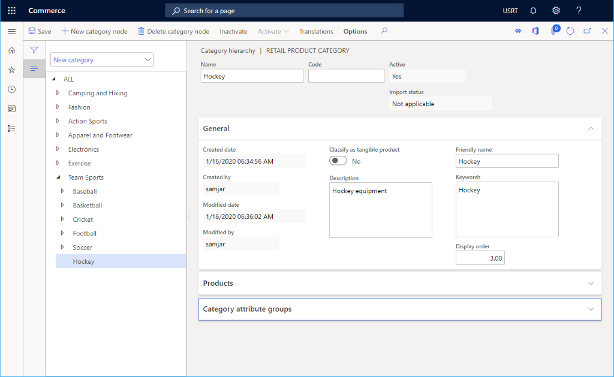

Neue Produkthierarchie erstellen
Important
Dynamics 365 Retail ist jetzt Dynamics 365 Commerce und bietet umfassende Handelsfunktionen für alle Kanäle – von E-Commerce über Shops bis hin zu Callcentern. Weitere Informationen zu diesen Änderungen finden Sie unter Microsoft Dynamics 365 Commerce.
In diesem Thema wird beschrieben, wie Sie eine neue Produkthierarchie in Microsoft Dynamics 365 Commerce erstellen.
Übersicht
Dynamics 365 Commerce unterstützt mehrere Retail Channels. Diese Vertriebskanäle umfassen Onlineshops, Callcenter und Einzelhandelsgeschäfte (auch physische Läden genannt). Jeder Einzelhandelskanal kann seine eigenen Zahlungsmethoden, Preisgruppen, POS-Register, Ein- und Ausgabenkonten und Mitarbeiter einrichten. Sie müssen alle Elemente einrichten, bevor Sie ein Ladengeschäftskanal erstellen können.
Es wird eine Commerce-Produkthierarchie verwendet, um die Gesamtprodukthierarchie für Ihre Organisation zu definieren. Sie können eine Commerce-Produkthierarchie für den Verkauf, die Preisgestaltung und die verkaufsfördernden Maßnahmen, die Berichterstellung und die Sortimentsplanung verwenden. Pro Organisation kann nur eine Commerce-Produkthierarchie zugewiesen werden.
Produkthierarchie erstellen und konfigurieren
Um eine Commerce-Produkthierarchie zu erstellen und zu konfigurieren, führen Sie die folgenden Schritte aus.
- Gehen Sie im Navigationsbereich zu Module > Retail und Commerce > Produkte und Kategorien > Commerce-Produkthierarchie.
- Wenn noch keine Hierarchie existiert, wählen Sie unter Aktionsbereich die Option Neu, um die Wurzel der Hierarchie zu erstellen.
- Unter Allgemeines:
- Geben Sie im Kästchen Name einen Namen ein.
- Geben Sie im Kästchen Beschreibung eine Beschreibung ein.
- Geben Sie in das Feld Anzeigename einen Anzeigename ein.
- Setzen Sie Aktiv auf Ja.
Hierarchieknoten hinzufügen
Gehen Sie folgendermaßen vor, um Hierarchieknoten hinzuzufügen.
- Klicken Sie im Aktivitätsbereich auf Kategoriehierarchie bearbeiten.
- Wählen Sie den übergeordneten Knoten aus, dem Sie einen neuen Knoten hinzufügen möchten, und wählen Sie dann Neuer Kategorieknoten aus.
- Im Abschnitt Allgemeines geben Sie Name, Beschreibung, Anzeigename und Schlüsselwörter ein.
- Unter Allgemeines:
- Geben Sie im Kästchen Name einen Namen ein.
- Geben Sie im Kästchen Beschreibung eine Beschreibung ein.
- Geben Sie in das Feld Anzeigename einen Anzeigename ein.
- Geben Sie im Feld Schlüsselwörter die relevanten Schlüsselwörter ein.
- Geben Sie im Feld Anzeigereihenfolge eine Anzeigereihenfolge ein (optional).
- Wählen Sie im Aktionsbereich Speichern aus.
- Wiederholen Sie die obigen Schritte, um weitere Knoten hinzuzufügen.
Das folgende Bild zeigt die Erstellung eines neuen Produkthierarchieknotens an.

Andere Einstellungen
Bei Bedarf können jeder Gruppe auch Kategorieattributgruppen zugewiesen werden.